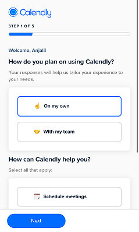

Form Design
Anjali Ravi
After reading “Best Practices for Form Design” by Salim Ansari, I gained more insights on how to design forms so users can have the best experience possible. As someone who hates filling out forms, the tips Ansari gave make sense and would make my experience filling out forms better. Something that he brought up that stood out to me was that no one wants to fill out a really long form so condensing information and all together taking out information is better. This hits home for me because I have often stopped filling out or put them off because they were too long. I also liked how Ansari brought up ways to make forms accessible. This is important so everyone can have a good experience completing the form and I will incorporate his tips into my designs.
I think a good example of a website that uses good form design is Calendly’s website. On the form when you are just getting started with using the platform they tell you how many more pages you have with the form, they give more information about why they are asking these questions in text that is lighter and less bold than the question, giving the form type hierarchy, and when you select your answer in either multiple choice or checkbox questions the border of the box of the answer you select changes color but also becomes bolder, making it more accessible.

Link to Ansari’s article:https://uxdesign.cc/best-practices-for-form-design-ff5de6ca8e5f
Link to Calendy:https://calendly.com/app/login